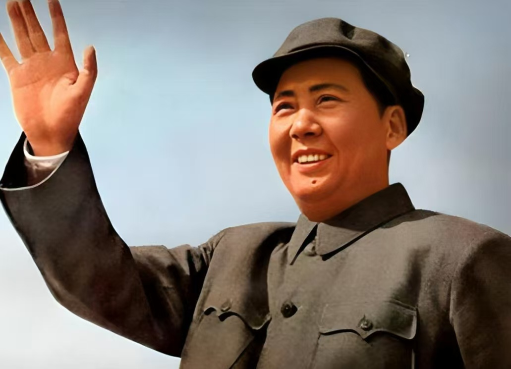
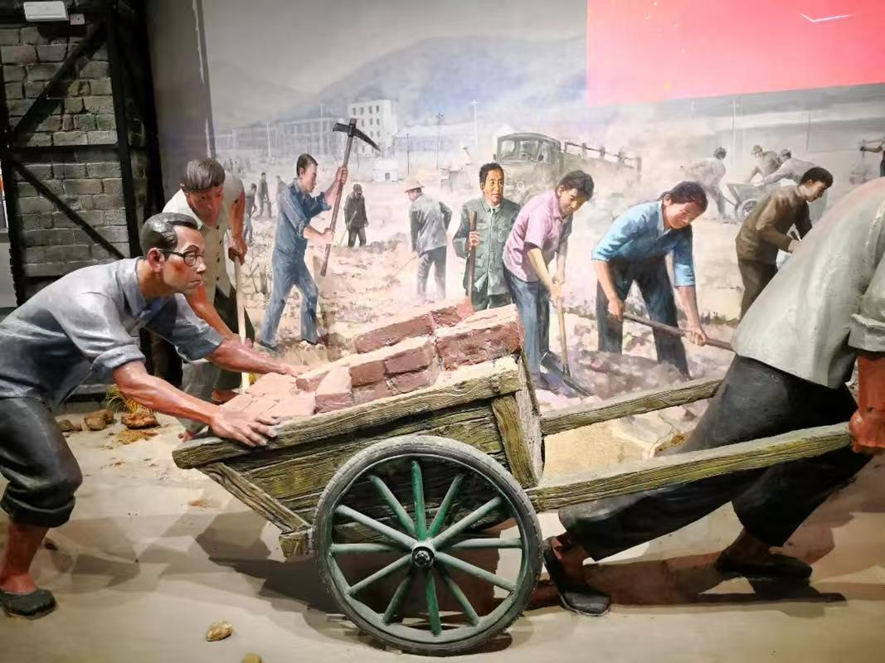
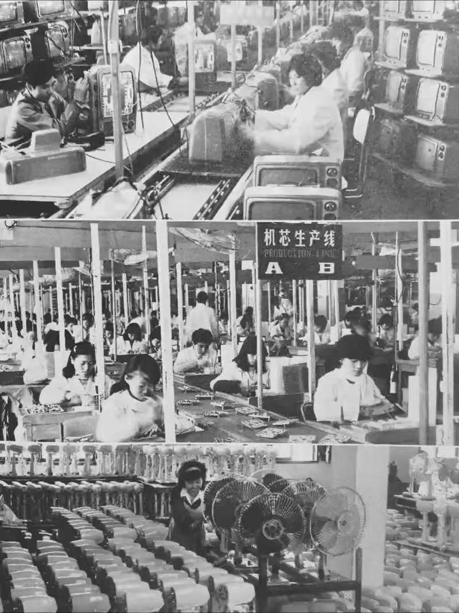
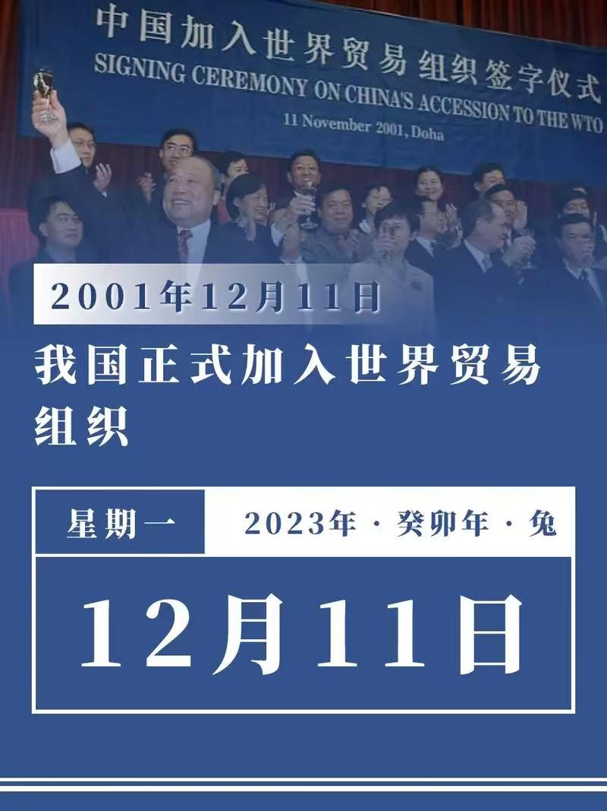

新中国发展阶段

1949–1956
毛基时期
1949年中华人民共和成立，标志着中国进入了崭新的历史时代。这个时期以恢复国民经济、土地改革、确立社会主义基本制度为主要任务，为国家的长期发展奠定了坚实的基础。

1957–1978
探索时期
这一时期中国经历了各种探索和实践，包括大跃进和文化大革命等社会政治运动。尽管困难重重，但在经济发展上还是积累了一些经验。

1978–1992
改革开放时期
从1978年开始，中国启动改革开放，转向市场经济。外资涌入，中国逐渐融入世界经济体系，取得了显著的经济增长。

1992–2008
发展与崛起
进入90年代后期，中国的经济持续增长，加入世界贸易组织，成为全球制造业的重要中心，并开始加大科技创新与国内市场的发展。

2008–至今
现代化建设
从2008年开始，中国步入了全球经济的主流，推动现代化建设并加强科技创新、绿色发展与全球战略合作，成为世界第二大经济体。